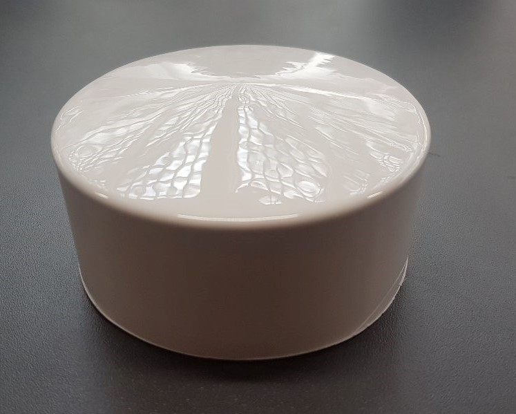
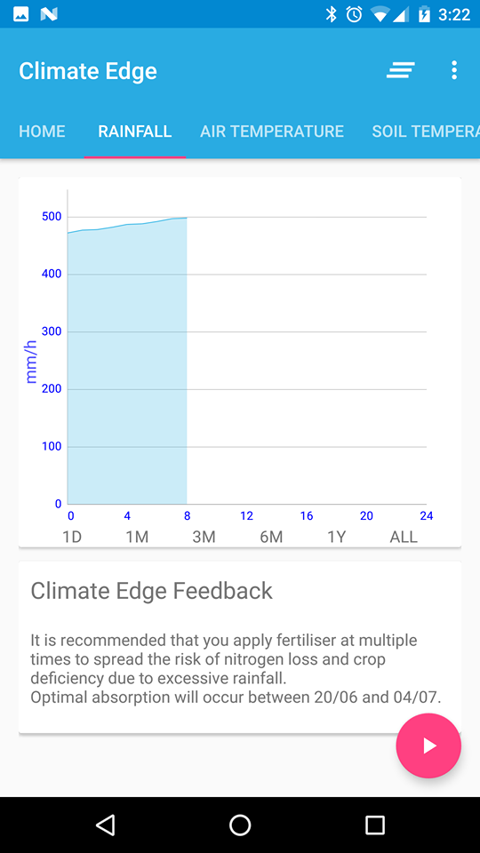
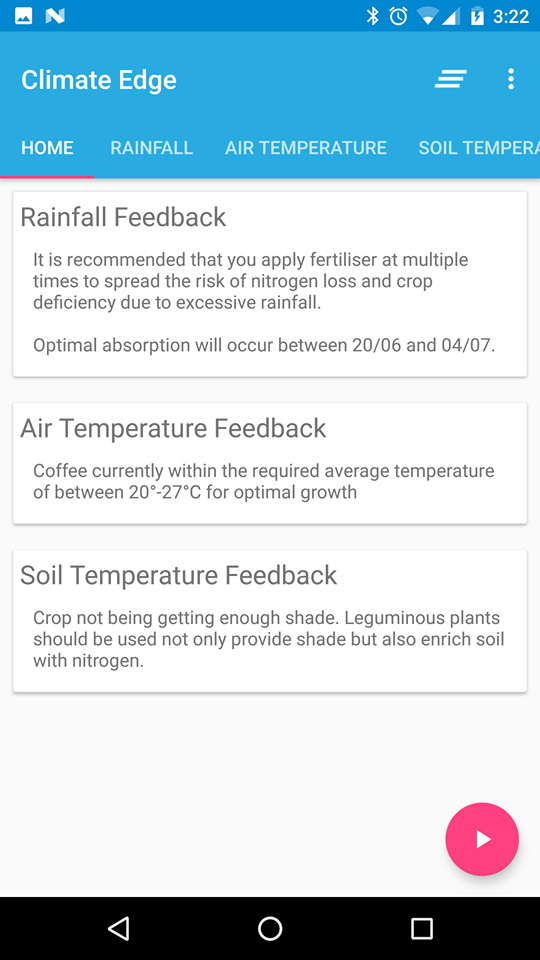

Climate Edge
Non-mechanical rain gauge and disdrometer with companion Android application
Overview
Climate Edge is a young startup with big ambitions. They use an IoT approach, built off local data collection, to offer tailored information to farmers and organisations working within tropical agriculture. They are currently working in partnership with Neumann coffee, Fairtrade International, Lutheran World relief, the Rwandan government just to name a few.
Our project with them was subdivided into two sub projects:
1. Design a precipitation sensor that does not use any moving parts.
2. Create an android application for a smartphone that will replace the PCBs installed on the weather station
Skills
Java: Java was used as for writing the Android application as it’s the default, has the most documentation and Kotlin had yet to be given official support. This was my first opportunity to learn Java so there was a steep learning curve as I had only really programmed in Python or C++ previously.
Android Studio: Android Studio was used as it is the official Android IDE. I learnt how to utilise the GIT integration as well as gain an understanding of how Android applications are set up. The integrated emulator was used as well as a tethered device over ADB for testing the application.
MPAndroidChart: To illustrate the data, a graph was produced in each tab using the data after it’s received via bluetooth. To do this, an external library was used called MPAndroidChart.
Bluetooth: To communicate between the microcontroller and the application, Bluetooth was used using the HC05 module. The data is sent to the application where it is buffered into a file for later use.
MySQL: A MySQL database was set up for storing data gathered from the sensors. Feedback to the farmer can be sent using a MySQL database instructing them on how to modify their farming techniques to adapt to a changing climate.
Arduino: The microcontroller used was an arduino due to simplicity. The microcontroller was tasked with was reading data in and sending it via Bluetooth to the phone. Optimisations were made to ensure minimal power consumption.
Analogue DesignPiezoelectric transducers were used to measure rainfall by measuring the induced voltage from the stress generated by raindrop impacts.
3D PrintingTo prototype the rainfall sensor, a 3D model was printed using ICRS facilities. This was purely for simplicity as the actual product would be created using vacuum forming.
Gallery
- 


- 
- 